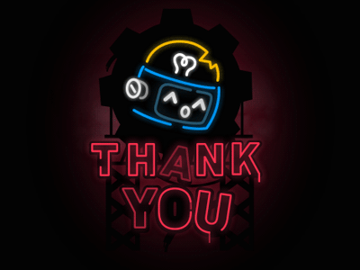

dalam halnya pembuatan web sendiri saya lebih suka membuat kerangka html atau JavaScript karena lebih suka fungsionalitas dan bagaimana membuat hal baru dalam web itu sendiri.
dan kurang mengerti dalam pendesainan web itu sendiri karena itu saya kurang bagus mendesainya saya juga masih kurang mengerti cara mengunakan tailwind dengan keseluruhanya.
saya merasa untuk pembuatan web bisa lebih difokuskan ke tailwind css atau JavaScript karena saya merasa bahwa css dan html lebih mudah dimengerti.
sekian pesan saya mohon maaf jika ada kesalahan kata.
